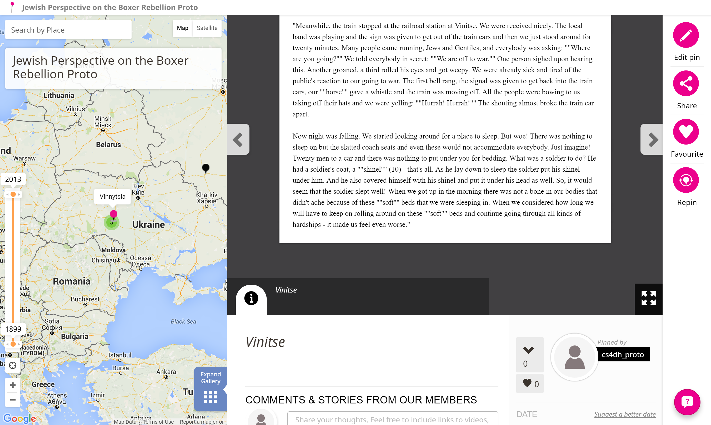
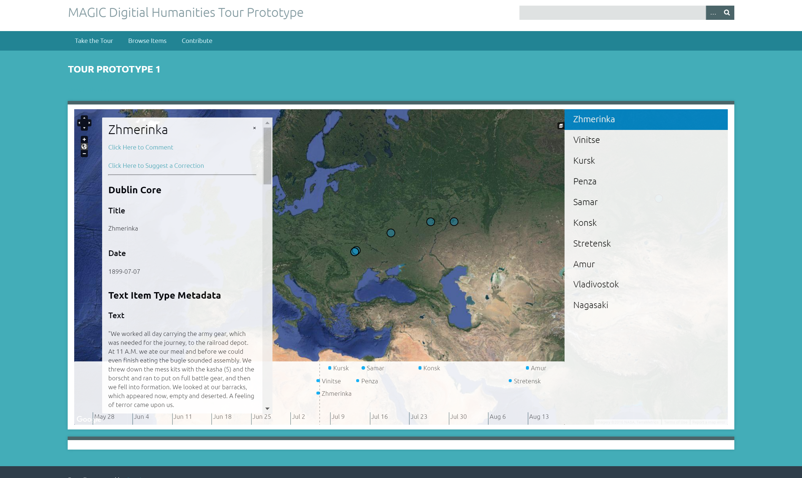
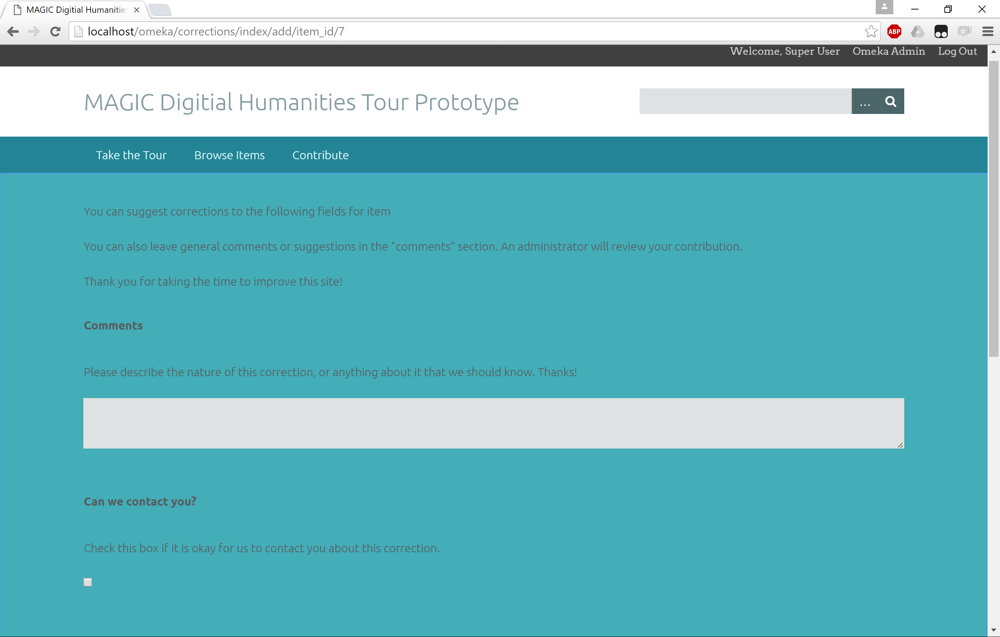
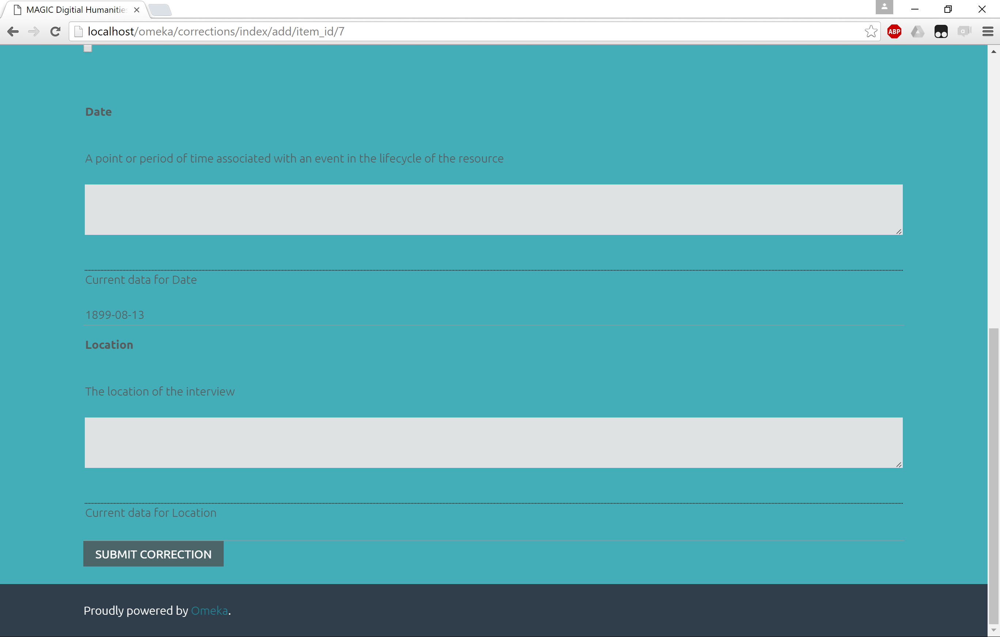
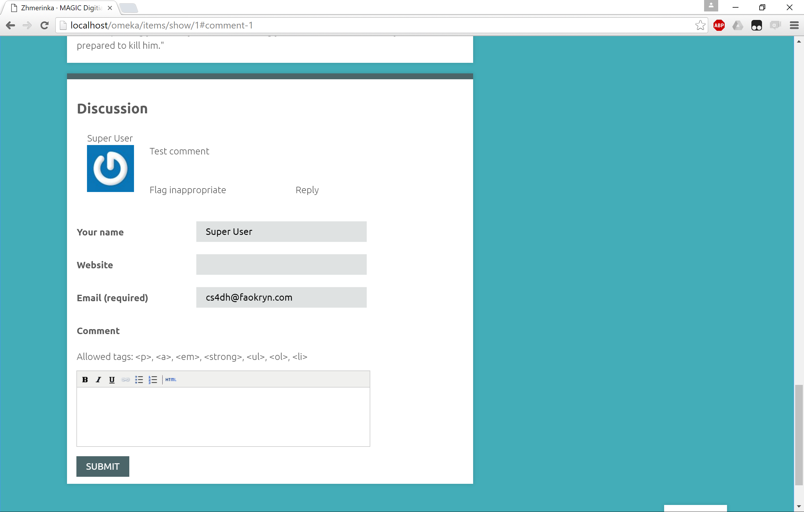
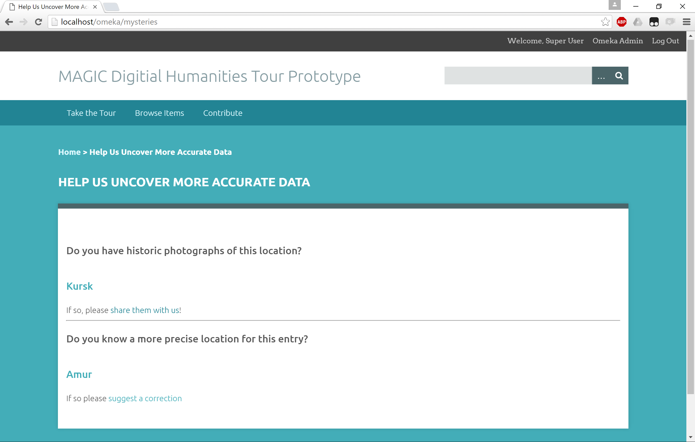

Digital Humanities Prototypes
A variety of prototypes to test various platforms and methods available for the display of data based on date and location (i.e. via timelines and maps), the crowdsourcing of more accurate metadata for content, and the crowdsourcing of additional content.
Historypin
Historypin is a site that allows users to upload images, videos, audio, or text and "pin" it on a map and timeline. This allows content to easily be viewed in a spatial-temporal context. Content is easy to add, and metadata such as title, description, usage rights, date, and location can be attached to content. Dates can be added as ranges, and a general location can be specified if an exact location isn't known. Related content can be grouped together as a "collection", or as an ordered "tour", allowing you to take your audience through your content in a planned path, whether that's chronologically, along a path on the map, or something else entirely.
The built-in timeline feature allows you to adjust the start and end times, and any content not falling between those dates is hidden. Unfortunately, the endpoints can only be adjusted by year, which makes this an imprecise tool. Also, there is no way to automatically adjust the displayed date when navigating through a tour.
Historypin has comments built into each piece of pinned content, allowing for conversation and collaboration right out of the box. It also has built-in features for your audience to suggest a better date and location. The suggesting user enters their updated data and a comment, and an administrator can manually update the data if necessary. This feature is still in its early stages of development, however, and is currently little more than a specially formatted comment on the content's comment thread. For any crowdsourcing efforts, a separately hosted site would be necessary to solicit answers to any particular questions from the audience and direct them to particular content.
Overall, Historypin is easy to use, and is good for use cases where you have a collection of content to present in a spatial-temporal context, and want some basic tools to enable audience participation. However, it falls short when building guided, interactive experiences to present your content to an audience.
Historypin is a software as a service site, and the prototype is therefore hosted externally.
View PrototypeOmeka
Omeka is a content hosting platform aimed at museums, cultural heritage organizations, and other academics. It supports hosting a large number of content types, and a large selection of metadata tags can be added to each item. Out of the box, Omeka simply displays collections and item details, but additional functionality can be gained using plugins. An administrator dashboard is used to add, modify, and curate content, change the site's appearance, and add, remove, and configure plugins.
Map and timeline functionality can be gained via the Neatline plugin suite. The Neatline plugin adds a map view where you can add items, shapes, annotations etc. The Neatline SIMILE Timeline plugin adds a timeline to the bottom of the map that can show the relative times of items on the map. The timeline's appearance and the time granularity are configurable. The Neatline Waypoint plugin adds a "waypoints" column to the right side of the map. This column can be used to guide your audience through a tour of your content.
The Neatline plugins are very feature rich and configurable. However, the configuration interface can be a bit frustrating. For example, points must be manually placed on the map, and cannot be placed either by either location names or GPS coordinates, as other platforms allow. The manner in which item information is displayed when the point is clicked is not very configurable. I also experienced some trouble with certain maps not loading without switching to a different map and back to the desired one.
Commenting can be added via the Commenting plugin. This adds comments to each item's details page. If you are using Neatline as the main way your content is presented, you can add a link to each item's detail page on its entry encouraging users to comment. This is less than ideal, as it causes the user to abandon the tour and navigate to a different page. Comment access and moderation can be configured in Omeka's administrator dashboard. User-sourced metadata correction can be accomplished via the Corrections plugin. Which metadata fields are open for correction are configurable via the Omeka administrator dashboard. Corrections are entered on their own page, and no link to this page is automatically included on the item details page or anywhere else on the site. A link to this page can be included on the item details page or Neatline entry, but again, this requires the user to navigate away from what they are doing to contribute. The suggestions are reviewed and potentially accepted by admins, but this process is black-boxed for users. Users can't comment on or even see others' corrections, so facilitating a conversation regarding the metadata may be difficult. There is no built-in way to pose specific questions to the audience, but a separate "questions" or "mysteries" page can be created, with links to relevant items' Corrections pages.
Overall, Omeka's plugin system gives it a lot of customizability and the ability to add a lot of powerful functionality. However, it also compartmentalizes the site, such that every function is on a separate page, even when you would like functionality to be in one location for easy usability. Omeka with Neatline plugins is great for use cases where content needs to be displayed in rich, interactive guided tours, particularly details of a local area. However, Omeka falls short on encouraging audience community through comments and contribution. It should be noted that, if the resources are available, custom plugins for Omeka could be developed to handle almost any desired functionality.
The front page of an Omeka/Neatline Tour

Viewing the details of an entry in an Omeka/Neatline Tour

Page allowing users to suggest metadata corrections for files
 Page allowing users to comment on files
Page allowing users to upload their own files
Tour Builder

Tour Builder allows you to add pinned events to a Google Earth map. Locations, start and end dates, descriptions, and images and videos can be added to events. Events appear in order on the left side of the screen, and can be reordered as necessary.
Tour Builder's interface is clean and easy to use. Specific locations can be added by location name or GPS coordinates. However, it has no timeline feature, only displaying the dates in each event's detail pane. Also, there are no user interaction features, such as commenting or contributing, so any functionality to comment, contribute, or pose questions would need to be implemented and hosted externally.
Overall, Tour Builder's simple interface make it great for quickly creating a guided tour to display your content, but its lack of features make it a poor choice for more use cases that require additional functionality or more customization.
Historypin is a software as a service site, and the prototype is therefore hosted externally.
View Prototype